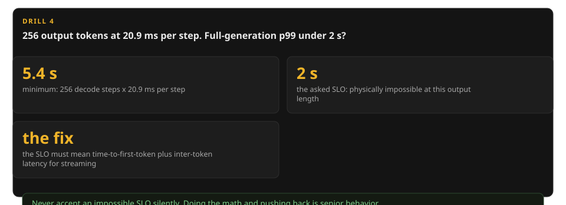
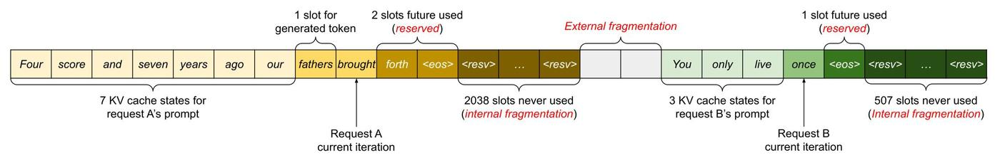
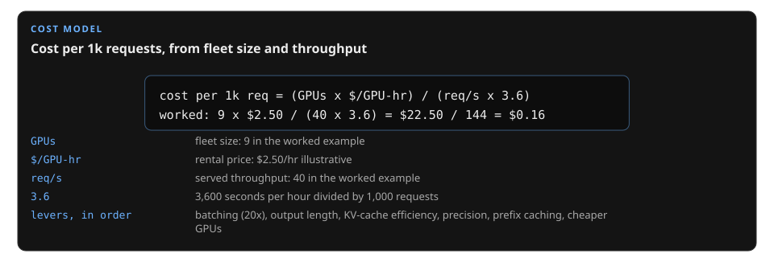
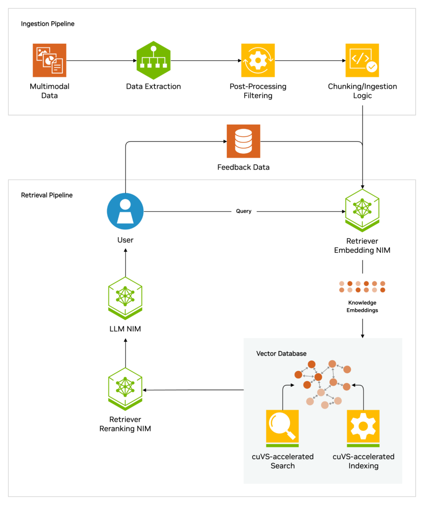
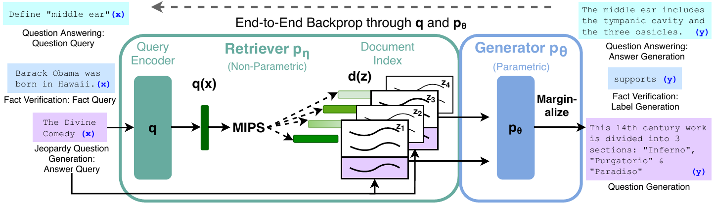
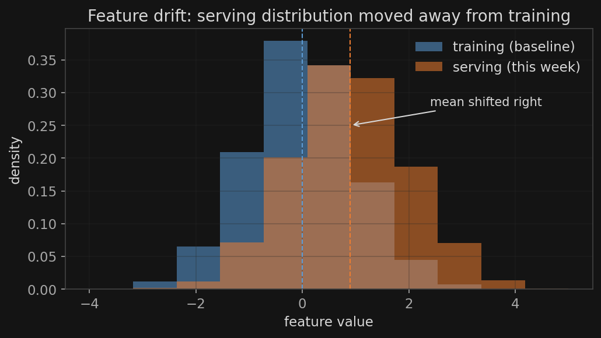
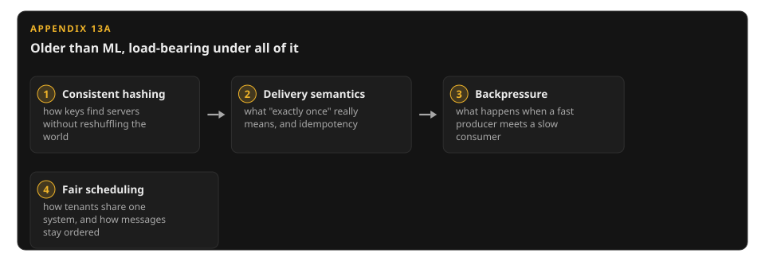
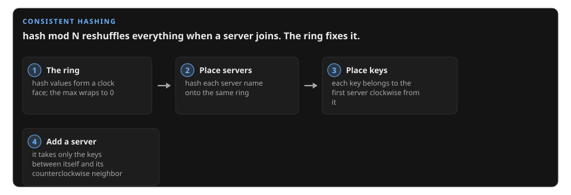

Research-Engineer CurriculumNo. 15 of 39 · Sept 2026 edition
Contents
- 0. The framework: say the numbers first
- 1. Data: the foundation every design stands on
- 2. Model choice: the smallest model that can do the job
- 3. Training at scale: FLOPs, memory, and time
- 4. Evals: measuring what matters
- 5. Capacity math: serving a 70B model
- 6. Serving at scale: batching, latency, and cost
- 7. RAG systems: retrieval meets generation
- 8. Monitoring and failure modes: what breaks, and how you know
- 9. Question bank: 9 system designs, worked
- 10. Capstone: the full whiteboard run
- 13A. Appendix: Distributed Systems Primitives
- Chapter 1. Consistent hashing
- Chapter 2. Delivery semantics and idempotency
- Chapter 3. Backpressure
- Chapter 4. Fair multi-tenant scheduling and ordered messaging
Design prompt
- Design LLM serving for 40 req/s on a 70B model. Start with the numbers.
- How long does it take to train a 70B model on 2T tokens? Show the FLOPs math.
- Your p99 doubled overnight. Debug it.
- Design a RAG system over 100M documents.
- How do you know your eval measures what you think it measures?
- INT8 quantization: what breaks, and how do you check?
- What is the KV cache, and why does it cap your batch size?
- Design a feature store for real-time ML. What problem does it solve?
- Your model's quality slipped and nobody changed the model. Where do you look?
0. The framework: say the numbers first
ML system design reviews are not architecture beauty contests. They are estimation exercises with boxes. The candidate who starts drawing microservices before doing arithmetic fails; the candidate who says "40 requests per second, 256 output tokens each (a token: roughly a word-piece, the unit the model reads and writes), so I need about 10,000 tokens per second of decode throughput" passes, even if their boxes are ugly. The framework of this volume is a four-step loop: requirements to numbers, numbers to architecture, architecture to bottlenecks, bottlenecks to cost. "Design X" is under-specified on purpose: the reviewer is testing whether you ask for the numbers or drown in vagueness. A 70B model at 40 req/s must batch aggressively and must fit its weights in HBM (high-bandwidth memory: the GPU's fast on-package memory). Those are not choices, they are consequences.
Figure 0.1. The loop: every design question runs through these four steps.
How to read this diagram: the climb
- Step 1, REQUIREMENTS: interrogate the question. Extract QPS (queries per second), the latency SLO (service-level objective: the latency promise you must keep), data scale, model size. Write every number the reviewer gives you, and flag every number you had to assume. If the reviewer will not give numbers, assume out loud.
- Step 2, NUMBERS: convert requirements into resource math. Tokens per second, FLOPs (floating-point operations: the unit of compute work), gigabytes. The engine is back-of-the-envelope estimation with memorized constants: a 70B model in FP16 (16-bit floating point: 2 bytes per parameter) is 140 GB of weights; HBM bandwidth is ~3.35 TB/s per GPU; a decode step (generating one output token) reads all the weights once; the KV cache (stored keys and values for generated tokens) grows with batch size times sequence length and caps how much you can batch. Per-request cost times QPS gives fleet size; times price gives the bill. Every chapter in this volume is one instance of this loop: training (FLOPs to GPU-days), serving (tokens/sec to GPUs), RAG (documents to index size), evals (samples to judge cost).
- Step 3, ARCHITECTURE: draw boxes that serve the numbers. Each box must be justifiable from step 2: "I need a router because...", not "systems usually have a router." The boxes exist to serve the math, not the other way around.
- Step 4, BOTTLENECKS + COST: break it on paper before traffic does. What breaks first when traffic doubles? What is the monthly bill? The reviewer will ask; have the answer ready. Then run the loop again on the next question.
A concrete example. "Design a chatbot serving 40 req/s." Step 1: you ask; the reviewer says 70B model, 512 input tokens, 256 output tokens, p99 under 2 seconds for first token. Step 2: 40 req/s × 256 tokens = 10,240 output tokens/sec. Each decode step reads 70 GB of weights (tensor parallelism across 2 GPUs: each layer's matrix multiplies split across GPUs, so each GPU holds half the weights) at 3.35 TB/s: ~21 ms per step per GPU. Batch 24 gives ~1,149 tokens/sec per GPU, so ~4.5 req/s per GPU, so 9 GPUs. Step 3: you draw a router, TP=2 worker pairs, and a KV-cache-aware scheduler, because the math says batching is the whole game. Step 4: the bottleneck is KV-cache memory at large batches; the bill is 9 × $2.50/hr = $22.50/hr. You have not drawn a single box yet and you already know the answer's shape. That is the framework working.
Common misunderstanding. "System design is about knowing lots of technologies." No: it is about deriving the design from the numbers. The reviewer does not care whether you name three vector databases; they care whether you can compute the index size:
Worked: 100,000,000 × 768 = 76.8 billion values; × 4 bytes each = 307.2 billion bytes ≈ 307 GB of vectors, and therefore the index needs sharding. Technologies are interchangeable; arithmetic is not.
Design prompt
- "Design a URL shortener." (Wrong volume, but the framework still applies: numbers first. What breaks at this scale is almost never what beginners draw first.)
- "What numbers do you have memorized for LLM design?" (70B = 140 GB FP16; ~3.35 TB/s HBM; decode reads all weights per step; KV cache caps batch. Recite them.)
Lab
- Take any "design X" question. Write the four framework steps on paper before drawing anything. Time yourself: the numbers step should take under 5 minutes.
- Memorize the five constants above. Quiz yourself until they are instant.
Next: Chapter 1 starts where every number comes from: the data pipeline, and the skew trap that opens at serving time.
1. Data: the foundation every design stands on
Chapter 0 gave you the loop: numbers first, always. But every number in that loop comes from somewhere, and the somewhere is data. This chapter starts at the source: the pipeline that turns raw events into training examples, and the trap that opens when serving computes the same features a different way.
Every ML system is two systems: the model, and the data pipeline that feeds it. Reviewers know that most production failures are data failures, so they probe data early, before any talk of GPUs. The vocabulary is small and worth getting exact. A training example is one input paired with its label. A feature is one input signal the model gets to look at: a purchase count, a pixel block, a word. The label is the right answer for that example. Ground truth is the set of labels you trust enough to train and evaluate against. If the labels are wrong, everything downstream is wrong, and no architecture fixes it.
Features come from somewhere. Raw events land in a data warehouse: the company's long-term store of historical tables. It is cheap, complete, and slow. Labels come from human annotation, from user behavior, or from existing systems. The training pipeline turns warehouse tables into training examples. So far, so batch.
Then serving starts, and the trap opens. Training-serving skew is when the model sees different feature values in production than it trained on. The classic case: the training pipeline computed "purchases in the last hour" from the warehouse once a day, but the serving path computes it from a live event stream with different windowing. The numbers look similar. They are not the same. The eval passes, because the eval uses the training path, and production quietly degrades. Skew is a silent killer: for every feature, ask how it is computed in both paths.
The feature store is the industry's answer, and now you can say what problem it solves. Training needs historical values: what was this feature's value at the time of each past event (point-in-time correctness)? Serving needs the latest value in single-digit milliseconds. One store cannot do both well, so the feature store is really two paths sharing one definition of each feature. The offline path computes features from the warehouse in batch and writes them to the offline store for training. The online path computes the same features from the event stream (stream processing: handling each event as it arrives) and writes them to the online store, a low-latency KV store (a key-value store: it answers "give me the value for this key" in milliseconds), for serving. Because both paths use the same feature definition, skew has nowhere to hide. At 50k reads/sec the online store is sharded (split across many machines, each holding part of the key space; Appendix 13A's hash ring is how a key finds its machine).
Figure 1.1. The feature store: one feature definition, two paths. The offline path serves training; the online path serves requests.
How to read this diagram: the climb
- Two sources, two speeds. Events stream in live; the warehouse holds history. Training needs the past; serving needs the now.
- The online path (top): the stream processor turns each event into features and writes them to the online store, a KV store answering reads in milliseconds. Serving reads here.
- The offline path (bottom): batch compute reads the warehouse and writes point-in-time features to the offline store. Training reads here.
- One feature definition bridges both paths: the same code computes each feature, so training values equal serving values. This is what kills skew.
- At scale the online store is sharded: keys split across machines, with Appendix 13A's hash ring routing each key, so 50k reads/sec divides across the shards.
A concrete example. Fraud detection, the Q1 numbers: 10k features, 1-minute freshness, 50k reads/sec. Offline: a nightly batch job reads the warehouse and builds point-in-time training rows. Online: a stream processor updates "transactions in the last hour" per card as events arrive; serving reads it from the KV store in ~2 ms. The team that skipped the store queried the warehouse at serving time instead, and p99 blew past the SLO: warehouses are built for throughput, not latency.
Common misunderstanding. "The feature store is a database." It is a contract plus two paths. The database is the easy part; the hard part is guaranteeing the training value equals the serving value.
[FIELD NOTE] One definition of each feature, used in both paths. When a reviewer asks about a feature store, they are asking how you prevent skew. Answer the skew question first and the storage question second.
Design prompt
- "Design a feature store for real-time ML." (This is the full Q1; you can now answer it from zero.)
- "Your model worked in the eval and fails in production. The model didn't change. What do you check first?" (Skew: diff the feature values between the two paths.)
Lab
- Pick 3 features of a product you know. Write down how each is computed in training and in serving, then find one skew risk.
- Size an online store: 10M keys × 200 bytes = 2 GB. How many shards do you need for 50k reads/sec if one shard handles 10k reads/sec?
Next: Chapter 2 climbs the ladder from baseline to 70B: the smallest model that clears the bar.
2. Model choice: the smallest model that can do the job
The most expensive mistake in ML system design is starting with the biggest model. Every step up the size ladder multiplies training cost (Chapter 3: compute is 6ND) and serving cost (Chapter 5: each decode step reads all the weights). So the discipline is: start at the bottom and climb only when the eval says the quality gain is worth the cost.
Start with the baseline: the simplest thing that could work. A heuristic, a keyword rule, a tiny model. It takes days, not months. It sets the bar every fancier model must beat, and it gives you a fallback for free (Chapter 8). A team with no baseline cannot tell whether their 70B is brilliant or just better than nothing.
The requirements (Chapter 0) choose the model family. Fixed categories from text or images (triage this ticket, detect this object): a small specialized model is usually enough, and far cheaper. Open-ended generation, reasoning, following instructions: that is what large language models are for. Knowledge that changes daily (prices, policies, documents): reach for RAG (Chapter 7) before fine-tuning. Retrieval updates in minutes; training updates in days.
Then the build-vs-buy question. If your data can leave your network and the latency SLO tolerates an API call, a managed model API skips the entire serving problem: no GPUs, no batching math, no 3 a.m. pages. If data must stay in-house, or you need single-digit-millisecond control, you own the fleet and Chapters 5 and 6 are your life. Say which constraint forces the choice: reviewers listen for the constraint, not the brand.
Evals decide. The choice between models is an eval question (Chapter 4), not a taste question: same dataset, same rubric, same judge, cost per quality point on the table. The winner is the cheapest model that clears the bar with margin.
Figure 2.1. The model-choice ladder: start at the baseline, climb only when the eval justifies the cost. The API branch skips the fleet when the constraints allow.
How to read this diagram: the climb
- The baseline comes first: days of work, sets the bar every fancier model must beat, and doubles as the fallback.
- Each rung multiplies cost: training (6ND) and serving (weights through memory every step). Never climb for free.
- The task picks the family: fixed categories get small models; open-ended generation gets LLMs; changing knowledge gets RAG.
- API vs own fleet is a constraint decision: data residency and the latency SLO decide, not taste.
- Evals arbitrate: same dataset, same judge, cost per quality point. The cheapest model that clears the bar wins.
A concrete example. Support-ticket triage. Baseline: keyword rules, 70% accuracy, two days of work. Small classifier: 85%, trains in an hour on one GPU, serves on CPU. 70B with prompting: 88%, and it needs the 9-GPU fleet from Chapter 5. The business needed 80%: ship the small model, keep the 70B result on record as the documented ceiling.
Common misunderstanding. "We need the best model." Nobody needs the best model; they need the cheapest model that clears the bar. The reviewer asks about cost per quality point to see whether you think in trade-offs.
[FIELD NOTE] I start with the baseline, then climb the ladder until the eval stops justifying the cost. Here is my baseline, here is the bar, here is what each rung costs.
Design prompt
- "When would you NOT serve a 70B model?" (When the bar is 80% and the small model hits 85%.)
- "Your knowledge changes daily. Fine-tune or RAG?" (Defend with update-latency numbers, not opinions.)
Lab
- Take a task from your work. Write the baseline in an hour, define the quality bar, then price two rungs of the ladder: training cost (6ND) and serving cost (GPUs × price).
- Write the one-paragraph build-vs-buy memo: which constraint forces your choice?
Next: Chapter 3 prices the top rung of the ladder: training at scale, in FLOPs, memory, and days.
3. Training at scale: FLOPs, memory, and time
Chapter 2 chose the model size. Now comes the bill for training it. This chapter turns that bill into arithmetic you can do on an index card: FLOPs set the budget, memory sets the minimum cluster, parallelism sets the tax.
Training a large model is a FLOPs problem wearing a logistics costume. The total compute is set by a simple formula, the memory is set by the optimizer state, and the wall-clock time is the quotient of the two, modified by how efficiently your cluster actually runs. "Train a 70B model" is a nine-figure decision if you get it wrong, and the math fits on an index card.
Figure 3.1. The training triangle: compute sets the budget, memory sets the minimum cluster, parallelism sets the efficiency.
How to read this diagram: the climb
- Step 1, COMPUTE.
C ≈ 6NDwhere: C = total training compute in FLOPs; N = parameter count; D = training tokens. The 6 counts forward plus backward passes per token (Kaplan et al. 2020 scaling-law derivations).
Worked, for 70B params on 2T tokens: 6 × 70×109 × 2×1012 = 6 × 1.4×1023 ≈ 8.4×1023 FLOPs. This number is fixed by N and D: no engineering changes it, only the choice of model and data size.
- Step 2, MEMORY: the optimizer state dominates. Adam in mixed precision (16-bit weights and gradients for speed, 32-bit optimizer state for stability) keeps about 12 bytes per parameter (per DeepSpeed documentation: 2 bytes fp16 weights, 2 bytes fp16 gradients, 4+4 bytes fp32 optimizer state).
M ≈ N × 12 byteswhere: M = memory for weights, gradients, and optimizer state; N = parameter count; 12 bytes = 2 (fp16 weights) + 2 (fp16 gradients) + 4 + 4 (fp32 optimizer state).
Worked: 70×109 × 12 bytes = 840×109 bytes ≈ 840 GB before storing a single activation. This sets the minimum cluster: you cannot train 70B on 8 GPUs (640 GB of HBM) without extreme sharding and offload. ZeRO (sharding the optimizer state across GPUs) exists because of this bar.
- Step 3, PARALLELISM: three axes, one tax. Data parallelism: each GPU sees different data and gradients are averaged; scales throughput best but needs the full model on every GPU. Tensor parallelism: splits individual layers across GPUs, needed when one layer does not fit. Pipeline parallelism: splits layers into stages, adding pipeline bubbles (idle time while stages wait for each other). Real clusters combine all three. MFU (model FLOPs utilization: the fraction of peak throughput training actually sustains) is the tax on all of it: at an illustrative 40% of the 989-TFLOPS H100 peak (NVIDIA spec, verified September 2026), each GPU delivers ≈ 4e14 effective FLOP/s.
- Step 4, TIME: the quotient.
T = C ÷ (GPUs × peak × MFU)where: T = wall-clock training time; C = 8.4×1023 FLOPs (from Step 1); peak = 989 TFLOPS per H100 (NVIDIA spec); MFU = 0.40, model FLOPs utilization (illustrative: real clusters hit 40-60%).
Worked: 989×1012 × 0.40 ≈ 4×1014 FLOP/s per GPU; × 1,024 GPUs ≈ 4.1×1017 FLOP/s; 8.4×1023 ÷ 4.1×1017 ≈ 2.05×106 s ≈ 24 days. Cost: 583,000 GPU-hours × $2.50/hr (illustrative) ≈ $1.46M. The reviewer wanted the 24 days; the candidate who also gives the $1.46M gets the hire signal.
Putting it together. "How long to train 70B on 2T tokens on 1,024 H100s?" The ladder gives 8.4e23 FLOPs ÷ (1024 × 4e14 FLOP/s) ≈ 24 days and ~$1.46M illustrative. The memory check closes it: ~840 GB of state needs at least 11 GPUs' worth of HBM (80 GB each), trivially satisfied by 1,024, with ZeRO sharding the optimizer state. Memory sets the minimum cluster, FLOPs set the time, and MFU falls as you scale: doubling GPUs to 2,048 will not halve the 24 days, because communication (gradient all-reduces, where every GPU shares its gradients with every other GPU so all end with the average, plus tensor-parallel exchanges) grows while compute per GPU shrinks. Finding the knee of that curve is the art; the math above is how you see it coming.
The 6ND formula sets the total budget. The next question is how to split it: between model size and training data. That split is the Chinchilla finding.

Figure 3.2. The Chinchilla finding: for a fixed compute budget, the optimal model is smaller and trained on more tokens than the field believed (the dashed Kaplan et al. 2020 line). 6ND is the budget; this plot says how to split it between model size and data.
How to read this diagram
- Axes: training compute (FLOPs) left to right, model size (parameters) bottom to top, both log scale. Moving right is a bigger budget.
- The dashed line is the old belief (Kaplan et al. 2020): bigger models for a given budget. The three solid approaches all predict a lower line: smaller models, trained longer.
- The stars are real models. Chinchilla (70B) sits on the new line; Gopher (280B) and GPT-3 (175B) sit above it: undertrained for their size, which is why Chinchilla beat them with less.
- The interview takeaway: when a reviewer asks "how big a model would you train?", the answer starts with the compute budget and this trade-off, not with a parameter count.
Design prompt
- "How long does it take to train a 70B model on 2T tokens?" (Do the full chain out loud: 6ND, 989 TFLOPS × 40% MFU, 24 days on 1,024 GPUs, ~$1.46M illustrative. Name the verified vs illustrative constants.)
- "Why can't I train 70B on 8 GPUs?" (Memory: ~840 GB of weights+grads+optimizer state vs 640 GB of HBM. Even with ZeRO and offload, the throughput would be miserable. Show the stacked bar.)
Lab
- Recompute the training time for a 7B model on 1T tokens with 256 GPUs at 45% MFU. (Answer should be roughly: 4.2e22 FLOPs ÷ (256 × 4.45e14) ≈ 4.3 days.)
- Compute the Adam state memory for a 13B model in mixed precision. How many 80GB GPUs minimum just to hold it?
Next: Chapter 4 builds the instrument that decides whether the training was worth it: evals.
4. Evals: measuring what matters
Chapters 1 through 3 built the training story: the data, the model size, the compute budget. None of it can be trusted until it is measured. This chapter builds the instrument everything downstream depends on: the eval. A bad eval is worse than no eval, because it manufactures confidence.
An eval is a measurement instrument, and like any instrument it can be miscalibrated. Most ML failures in production are eval failures first: the model optimized the metric, the metric did not measure what the users needed, and nobody noticed until the complaints arrived. Everything downstream depends on the eval (model selection, launch decisions, regression detection), so a bad eval is worse than no eval: it manufactures confidence. This chapter builds the instrument in four steps.
Figure 4.1. The eval harness: four parts plus the calibration loop that keeps the judge honest.
How to read this diagram: the climb
- Step 1, DATASET: sample real traffic, not textbooks. Anonymize real user prompts and label what good looks like. If the eval prompts do not look like user prompts, the eval measures a different task. Watch for metric gaming: the model learning to satisfy the judge rather than the user, until the eval becomes a ceremony.
- Step 2, RUBRIC: make "good" checkable. Vague rubrics produce vague verdicts; every rubric item should be answerable yes/no by a careful reader. "Helpful" is not a rubric; "cites the correct policy section and gives the right final number" is.
- Step 3, JUDGE: pick the grader, then distrust it precisely. Human, heuristic, or model. LLM-as-judge (a strong model grading outputs) is cheap and fast but biased: it favors longer answers, its own style, and confident tone. Calibrate it: have the judge grade a few hundred examples that humans also graded, and measure agreement. If judge-human agreement is 85%, your eval's ceiling is 85%: never report model differences smaller than the judge's own noise.
- Step 4, STATISTICS: buy resolution with samples. A 2-point win on 100 samples is noise; on 10,000 samples it is signal. The eval is not done until the statistics are.
SE = √(p(1−p)/n)where: SE = standard error of the measured accuracy: how much the number would wobble if you re-ran the eval; p = the true accuracy; n = sample count.
Worked, from the lab hint: p = 0.9, n = 2,000 gives √(0.9 × 0.1 ÷ 2000) = √(0.000045) ≈ 0.0067 ≈ 0.7 points. That is why a 2-point win on 100 samples is noise and on 10,000 samples is signal.
eval cost = samples × tokens/sample × price per 1M tokenswhere: samples = eval dataset size; tokens/sample = judge input plus output; price = $3/1M tokens (illustrative).Worked: 10,000 × 1,000 × $3/1,000,000 = 10 million tokens × $3 per million ≈ $30 per full eval run with a judge model, versus ~$10,000 for human grading at $1/sample. That 300x gap is why judge models exist; the agreement number is why you calibrate them.
A concrete example. You need to eval a support chatbot. Dataset: 2,000 real anonymized tickets, sampled proportionally from each category (stratified sampling). Rubric: (1) final answer matches the resolution in the ticket, (2) cites the correct policy, (3) no hallucinated order numbers. Judge: a strong model with the rubric in its prompt, calibrated against 300 human-graded tickets: agreement 88%. Statistics: 2,000 samples gives a standard error (how much the measured accuracy would wobble if you re-ran the eval) of ~0.7 points on accuracy, so you can resolve 2-point differences. Cost: 2,000 × ~2k tokens (prompt + completion) = 4M tokens ≈ $12 illustrative per run. Now model B beats model A by 1.5 points: below your 2-point resolution, so you call it a tie and run more samples instead of shipping on noise.
Common misunderstanding. "A bigger benchmark is always better." A bigger benchmark of the wrong task just measures the wrong thing more precisely. Validity (does it measure what users need?) beats size every time. The first question about any eval is never "how many samples" but "show me five prompts and tell me why each one represents real use."
Design prompt
- "How do you know your eval measures what you think it measures?" (Sample from real traffic; checkable rubric; judge-human calibration; and the ultimate test: does the eval predict user satisfaction? Track that correlation.)
- "Your judge model favors long answers. What do you do?" (Measure the bias on the calibration set, add a length-penalty or pairwise comparison to the rubric, and re-calibrate. Never ignore a known judge bias.)
Lab
- Take 20 prompts from your own usage. Write a checkable rubric for "good answer" (yes/no items only). Grade 5 model outputs yourself, then have a colleague grade the same 5: what is your human-human agreement? That is your ceiling.
- Compute the sample count needed to resolve a 1-point accuracy difference at 95% confidence. (Hint: standard error of a proportion is sqrt(p(1-p)/n).)
Next: Chapter 5 serves the model: the capacity math for 40 req/s on a 70B.
5. Capacity math: serving a 70B model
Chapter 4 built the instrument that judges models. Now the question turns operational: what does it cost to serve the winning model at real traffic? This chapter turns one fact, every decode step reads all the weights from memory, into the full capacity chain: step time, batching, KV-cache limits, fleet size, bill.
Serving a large language model is a memory-bandwidth problem wearing a latency costume. Every token the model generates requires reading all of its weights from GPU memory once. That single fact determines everything: the per-token latency, the throughput per GPU, the fleet size, and the bill. This chapter turns that fact into arithmetic you can do on a whiteboard. The inputs: 70B parameters × 2 bytes for FP16 = 140 GB of weights; 3.35 TB/s of memory bandwidth on an H100 SXM (NVIDIA's published spec, verified September 2026); a workload of 512 input tokens, 256 output tokens, 40 req/s. The output: 9 GPUs at $22.50/hr. Every step in between is division. ("We need to serve the model" is not a plan: teams that cannot do this math over-provision and burn money, or under-provision and melt at launch.)
Figure 5.1. The capacity chain: each arrow is one division.
How to read this diagram: the climb
- Step 1, the atom: step time = weights ÷ bandwidth. Inference has two phases. Prefill processes the input prompt all at once: compute-bound and fast. Decode generates output tokens one at a time, and each step reads all the weights from HBM: memory-bound and slow. Decode dominates cost, so its step time is the atom of serving math. With tensor parallelism across 2 GPUs, each GPU holds 70 GB of weights.
t_step = W ÷ BWwhere: t_step = one decode step; W = weights per GPU = 70 GB (tensor parallelism across 2); BW = 3.35 TB/s HBM bandwidth (NVIDIA spec).
Worked: 70 ÷ 3,350 = 0.0209 s ≈ 21 ms per decode step.
- Step 2, the lever: batching amortizes the step. One decode step produces one token per request in the batch, so one decode step produces one token per request in the batch.
throughput = B ÷ t_stepwhere: B = batch size; t_step = 0.0209 s from Step 1.
Worked: 24 ÷ 0.0209 ≈ 1,149 tokens/sec per GPU. Batching is the 20x lever (batch 1 vs 24 in the lab table below).
- Step 3, the limiter: the KV cache caps the batch. Each request's cached keys and values (the context: the prompt plus every token generated so far) consume ~0.25 GB with grouped-query attention (GQA: several query heads share one key/value head, shrinking the cache; without GQA it would be ~2 GB per request and batching would barely work). Batch 48 needs 12 GB of cache and no longer fits alongside the weights: the table shows it has the best throughput and does not fit. Convert to the request economy the SLO speaks:
req/s per GPU = throughput ÷ output tokenswhere: throughput = 1,149 tokens/sec from Step 2; output tokens = 256 per request (the SLO average).
Worked: 1,149 ÷ 256 ≈ 4.5 req/s per GPU.
- Step 4, the bill: fleet = target ÷ per-GPU throughput.
GPUs = target req/s ÷ per-GPU req/swhere: target = 40 req/s; per-GPU = 4.5 req/s from Step 3. Round up: you cannot rent half a GPU.
Worked: 40 ÷ 4.5 ≈ 8.9, so 9 GPUs.
cost/hr = GPUs × $/GPU-hrwhere: $/GPU-hr = $2.50 (illustrative rental price).Worked: 9 × $2.50/hr = $22.50/hr (illustrative). Every arrow in the diagram is one division.
The lab, executed. Below is the real output of v13_capacity_lab.py (run during the build with the verified constants; the script sits next to this file). Follow the chain:
Capacity math, from the runnable lab (real output, executed during the build; bandwidth verified against NVIDIA's H100 spec, price illustrative) ──────────────────────────────────────────────────────── 70B FP16 weights: 140 GB -> 2 GPUs tensor-parallel (70 GB each) KV cache per request (768 ctx tokens, GQA): 0.25 GB Decode step time: 20.9 ms per GPU (batch=1 -> 48 tok/s) batch= 1 KV= 0.3GB fits=yes thr= 48 tok/s/GPU -> 0.2 req/s/GPU batch= 8 KV= 2.0GB fits=yes thr= 383 tok/s/GPU -> 1.5 req/s/GPU batch= 24 KV= 6.0GB fits=yes thr= 1149 tok/s/GPU -> 4.5 req/s/GPU batch= 48 KV= 12.1GB fits=NO thr= 2297 tok/s/GPU -> 9.0 req/s/GPU -- sizing for target -- At batch=24: 4.5 req/s per GPU (TP=2 pairs count as 2 GPUs) GPUs for 40 req/s: 8.9 -> ~9 GPUs Cost: 9 x $2.5/hr = $22.50/hr Cost per 1k requests: $0.16 (illustrative) -- drill: what breaks if you change X -- Double output tokens to 512: req/s per GPU halves -> GPUs needed x2. Quantize to INT8 (1 byte/param): weights 70GB, step 10.4ms -> ~2x throughput, quality trade-off TBD by eval (Ch 4). p99 latency: batch=48 waits to FILL the batch -> queueing delay; throughput up, tail latency up. Pick batch by SLO, not by max throughput.
Reading the output. The method is the durable skill: weights → bandwidth → batch → fleet → cost. The bandwidth figure is verified (NVIDIA spec); the $2.50/GPU-hour price is illustrative. Two killers hide in the table: batch 48 has the best throughput and does not fit (the KV cache is the binding constraint, not compute), and batching is a 20x throughput lever (batch 1 vs 24). Bigger batches are not always better: a big batch waits to fill, adding queueing delay that blows up p99 latency (p99: the latency 99% of requests beat; the tail users actually feel). Pick the batch by the SLO, not by the max throughput number. Throughput you cannot serve is not throughput. Quantization means storing each weight in fewer bytes (INT8: 1 byte per parameter instead of FP16's 2): the drill below shows it nearly doubling throughput, with the quality check left to Chapter 4's evals.
Design prompt
- "Design LLM serving for 40 req/s on a 70B model." (Walk the full chain: 140 GB weights, 3.35 TB/s, 21 ms steps, batch 24, 4.5 req/s/GPU, 9 GPUs, $22.50/hr. Say which constants are verified and which are illustrative.)
- "What breaks if output length doubles to 512?" (Req/s per GPU halves: GPUs needed double. Output length, not input length, drives cost.)
Lab
- Run v13_capacity_lab.py yourself. Change the target to 200 req/s and the output length to 512. Watch the GPU count and per-1k cost move.
- Change precision to INT8 (1 byte/param) in the script. Note what the lab cannot tell you: the quality impact, which only evals can measure.
"""Vol 13 labs: serving capacity calculator + cost/latency drill. Illustrative hardware constants (labeled in the chapter); the MATH is the lesson. Run: python3 v13_capacity_lab.py """ # ---- hardware constants ---- # GPU_BW_TBs VERIFIED Sept 2026: NVIDIA H100 SXM spec = 80GB HBM3, 3.35 TB/s # (also 989 TFLOPS dense FP16). GPU_PRICE_HR is ILLUSTRATIVE (market varies; # a 2026 RunPod guide lists H100 from $1.99/hr community cloud) ---- GPU_MEM_GB = 80.0 # H100 SXM (verified: NVIDIA spec) GPU_BW_TBs = 3.35 # memory bandwidth, TB/s (verified: NVIDIA spec) GPU_PRICE_HR = 2.50 # $/GPU-hour (illustrative rental price) MODEL_PARAMS_B = 70.0 BYTES_PER_PARAM = 2.0 # FP16 N_LAYERS, HIDDEN = 80, 8192 # GQA (Vol 4): only 8 KV heads, not 64 -> KV cache is 8x smaller than MHA. # Without GQA, serving a 70B model barely batches at all (see drill below). KV_HEADS, Q_HEADS = 8, 64 KV_BYTES_PER_TOKEN = 2 * N_LAYERS * (HIDDEN * KV_HEADS // Q_HEADS) * BYTES_PER_PARAM AVG_IN_TOK, AVG_OUT_TOK = 512, 256 TARGET_RPS = 40.0 # requests per second weights_gb = MODEL_PARAMS_B * 1e9 * BYTES_PER_PARAM / 1e9 kv_per_seq_gb = KV_BYTES_PER_TOKEN * (AVG_IN_TOK + AVG_OUT_TOK) / 1e9 print(f"70B FP16 weights: {weights_gb:.0f} GB -> min GPUs for weights: {weights_gb/GPU_MEM_GB:.1f} (use 2, tensor-parallel)") print(f"KV cache per request ({AVG_IN_TOK+AVG_OUT_TOK} ctx tokens, GQA): {kv_per_seq_gb:.2f} GB") mha_kv = 2 * N_LAYERS * HIDDEN * BYTES_PER_PARAM * (AVG_IN_TOK + AVG_OUT_TOK) / 1e9 print(f"Same cache with full MHA (no GQA): {mha_kv:.2f} GB/req -- GQA is why 70B serving batches at all (Vol 4).") # Per-GPU decode throughput: each step reads all weights once from HBM. sec_per_step = weights_gb / (GPU_BW_TBs * 1000) print(f"\nDecode step time (weights/BW): {sec_per_step*1000:.1f} ms (batch=1 -> {1/sec_per_step:.0f} tok/s)") print("\n-- batching trade-off per GPU (TP=2: 70GB weights per GPU) --") w_per_gpu = weights_gb / 2 sec_per_step = w_per_gpu / (GPU_BW_TBs * 1000) for batch in [1, 8, 24, 48]: kv_total = batch * kv_per_seq_gb fits = kv_total + w_per_gpu < GPU_MEM_GB - 2 # 2GB reserve for activations/CUDA tok_per_s = batch / sec_per_step rps = tok_per_s / AVG_OUT_TOK print(f"batch={batch:3d} KV={kv_total:5.1f}GB fits={'yes' if fits else 'NO '} " f"thr={tok_per_s:6.0f} tok/s/GPU -> {rps:5.1f} req/s/GPU") print("\n-- sizing for target --") rps_per_gpu = 24 / sec_per_step / AVG_OUT_TOK # batch=24 row n_gpu = TARGET_RPS / rps_per_gpu print(f"At batch=24: {rps_per_gpu:.1f} req/s per GPU (TP=2 pairs count as 2 GPUs)") print(f"GPUs for {TARGET_RPS:.0f} req/s: {n_gpu:.1f} -> ~{int(n_gpu+0.99)} GPUs") print(f"Cost: {int(n_gpu+0.99)} x ${GPU_PRICE_HR}/hr = ${int(n_gpu+0.99)*GPU_PRICE_HR:.2f}/hr") per_1k = int(n_gpu+0.99) * GPU_PRICE_HR / (TARGET_RPS * 3600) * 1000 print(f"Cost per 1k requests: ${per_1k:.2f} (illustrative)") print("\n-- drill: what breaks if you change X --") print(f"Double output tokens to 512: req/s per GPU halves -> GPUs needed x2.") print(f"Quantize to INT8 (1 byte/param): weights {weights_gb/2:.0f}GB, step {w_per_gpu/2/(GPU_BW_TBs*1000)*1000:.1f}ms -> ~2x throughput, quality trade-off TBD by eval (Ch 4).") print(f"p99 latency: batch=48 waits to FILL the batch -> queueing delay; throughput up, tail latency up. Pick batch by SLO, not by max throughput.")
Next: Chapter 6 leaves steady state behind: queues, tail latency, and the cost model.
6. Serving at scale: batching, latency, and cost
Chapter 5 did the capacity math for a fixed batch. This chapter is about the dynamics: how requests actually flow, why tail latency behaves the way it does, and how to reason about cost per request. The mental model: a serving system is a queue in front of a batcher in front of GPUs, and every design decision moves the pain between throughput, latency, and cost. Chapter 5's steady state never exists: real traffic bursts, requests have wildly different output lengths, and the p99 user experiences the queue, not the average. The systems that survive production are the ones designed for the tail.
Figure 6.1. The serving stack: the router, the batcher, and the scheduler that prevents OOMs.
How to read this diagram: the climb
- Step 1, REQUESTS: bursts arrive. Client traffic does not arrive evenly. The router sees the queue depth, and queueing delay is part of p99, not just model time.
- Step 2, ROUTER: keep decode saturated without static-batch waste. Static batching waits for a full batch, and the whole batch waits for its slowest request: wasted steps. Continuous batching swaps finished requests out and new ones in at every decode step, so every step does useful work for whoever is still generating. The router packs requests dynamically, routes to the worker with the most free KV-cache memory, and owns the autoscaling signals. The autoscaler watches queue depth (and time-to-first-token: TTFT, how long until the first token streams back), not GPU utilization: by the time GPUs look idle-but-queued, you are already late. Cold start (loading 140 GB of weights) takes minutes, so keep warm spares or accept slow scale-up.
- Step 3, WORKERS: admit on peak future cache, not current use. Each worker holds a 70 GB weight shard (tensor-parallel pairs) plus its KV cache. Each request's cache grows as it generates, so the scheduler must admit a request only if its peak cache at max output length fits. Admitting on current use OOMs (runs out of memory) mid-generation.
- Step 4, RESPONSES + the SLO truth: read the physics before promising. Worked: 256 × 21 ms = 5,376 ms ≈ 5.4 s for full generation by physics, no matter what you do: a "p99 under 2 s" SLO cannot mean full generation. For chat it means time-to-first-token plus inter-token latency for streaming. Catching that impossibility before designing is the senior move. Then the cost math: cost per 1k requests = (GPUs × $/GPU-hr) ÷ (req/s × 3.6). The levers, in order of size: batching (20x), output length (linear: halve the tokens, halve the cost), KV-cache efficiency (GQA), precision (2x, with quality risk), prefix caching (reusing prefill for repeated prompt prefixes), cheaper GPUs (spot, older gen). Latency and throughput are the same problem from different ends: every throughput lever (bigger batches) is a latency lever (more queueing), and the batch size is the dial that trades them.L ≈ queueing + prefill + (out_tokens × t_step)where: L = per-request latency; queueing = wait for a free slot; prefill = one-time prompt processing; out_tokens = tokens generated; t_step = 21 ms from Chapter 5.
Drill 4: pick the batch size for p99 under 2 s at 40 req/s
From the lab table: batch 24 gives 4.5 req/s per GPU at ~21 ms steps; 9 GPUs handle 40 req/s. Latency per request ≈ queueing + prefill + 256 tokens × 20.9 ms ≈ queueing + prefill + 5.4 s? No: 256 decode steps × 20.9 ms is 5.4 seconds, which blows the 2 s SLO. Catch the error: with continuous batching, the per-token latency is what matters for streaming, and time-to-first-token plus inter-token latency is the real SLO for chat. This is the correction a strong candidate makes mid-answer.
Answer: "At 256 output tokens and 20.9 ms per step, full-generation p99 cannot be 2 s; the SLO must mean time-to-first-token plus inter-token latency for streaming, or far fewer output tokens. I would clarify the SLO, then set the batch where queueing delay keeps time-to-first-token under budget. If they insist on 2 s for full generation, the answer is: impossible at this output length, here is the math."

How to read this diagram
- 5.4 s is the floor: 256 steps times 20.9 ms.
- The 2 s SLO cannot mean full generation.
- The fix: the SLO must mean time-to-first-token plus inter-token latency. Doing the math and pushing back is senior behavior.
Drill 5: the one-minute cost model (memorize this)
Worked: 9 × $2.50 ÷ (40 × 3.6) = $22.50 ÷ 144 ≈ $0.16 per 1k requests (illustrative).
Levers, in order of size:
- Batching (20x, Ch 5)
- Output length (linear)
- KV-cache efficiency (GQA)
- Precision (2x, quality risk)
- Prefix caching (prefill only)
- Cheaper GPUs (spot, older gen)

Figure 6.2. KV-cache fragmentation: request A reserves far more slots than it uses (internal fragmentation: 2,038 slots never used); free memory sits in gaps between live requests where no single request can use it (external fragmentation). Fragmentation is why the effective batch is smaller than the raw memory math suggests, and why the scheduler admits on peak future cache.
How to read this diagram
- The strip is GPU memory holding KV-cache slots. Request A's prompt fills the first 7 slots; its generated tokens grow into the reserved region beside them.
- Internal fragmentation: the brown reserved block holds 2,038 slots request A may never use. Reserved is not free: nothing else can claim it.
- External fragmentation: the white gaps between request A and request B are free but scattered: too small and too split up for a new request's contiguous need.
- The scheduler's lesson: free memory on paper is not usable memory. Admit on peak future cache (Step 3), because the fragments will not save you.
Design prompt
- "Your p99 doubled overnight. Debug it." (Checklist: traffic spike? batch config change? a new long-output use case clogging batches? KV-cache evictions? router regression? Walk it in order, with the dashboard you would look at for each.)
- "Drill 2: p99 doubled after an INT8 quantization change. Debug it." (The trap: quantization should reduce latency (half the weights, half the step time). So the model is innocent until proven guilty: check the serving stack diff that shipped with the quantization, new router version, new batching config; verify with an A/B: same traffic, FP16 vs INT8, same batch cap.)
Lab
- Extend v13_capacity_lab.py: add a queueing model (M/D/1 approximation: random arrivals, fixed service time) and plot p99 vs batch size at 40 req/s. Find the batch that minimizes p99. Is it the max-throughput batch?
- Price the INT8 switch end to end: half the step time, same fleet. What is the new cost per 1k? What eval would you run before shipping it?
Next: Chapter 7 answers what the model does not know: RAG over 100M documents.

How to read this diagram
- The formula: GPUs times dollars per GPU hour, divided by requests per second times 3.6.
- The worked row: 9 GPUs at $2.50/hr serving 40 req/s.
- The levers are in order: batching first, 20x, then the rest.
7. RAG systems: retrieval meets generation
Chapter 6 closed the serving dynamics: queues, tails, and the cost of every request. One serving question stayed open the whole time: what happens when the model does not know the answer? Retraining for every new fact is too slow and too expensive. This chapter decouples knowledge from reasoning: retrieve the documents at query time, put them in the prompt.
RAG (retrieval-augmented generation) is the standard answer to "the model does not know my data": instead of training the knowledge in, you retrieve relevant documents at query time and put them in the prompt. Fine-tuning (further training a model on new data to change its behavior) cannot keep up with changing data, and a 100M-document corpus will never fit in context: RAG decouples knowledge (stored in the index, updated by re-ingesting) from reasoning (done by the model at query time). It also makes answers attributable: the model can cite the chunk it used, the only scalable antidote to hallucination (the model stating false things with confidence) in knowledge tasks. It is the highest-leverage architecture in applied LLM work, and its failure modes are almost all in the retrieval half, not the generation half.
Figure 7.1. The RAG pipeline. Quality lives in the retrieval half; cost lives in the index.

Figure 7.2. The same five stages at industrial scale, from NVIDIA's RAG explainer: extraction, filtering, and chunking on the ingestion path; embedding, vector search, and reranking on the retrieval path; a feedback data loop feeding back in.
Source: NVIDIA Technical Blog, 2024. Image downloaded and hosted locally; never hotlinked.
How to read this diagram: the climb
- Step 1, INGEST → CHUNK: cut the corpus into retrievable pieces. Documents become overlapping chunks. Chunking is the first quality lever: chunks too large dilute the signal (the relevant sentence drowns in boilerplate); chunks too small lose context (the answer needs the surrounding paragraph). Overlap chunks by ~10% so no key sentence gets split at a boundary. Tune this before touching the model.
- Step 2, EMBED → INDEX: teach the system what "similar" means. The embedding model converts chunks to vectors, and it must be trained or fine-tuned on your domain's notion of relevance: a generic embedder retrieves generically. Exact search over 200M vectors is too slow, so the index uses approximate nearest neighbor (ANN; HNSW and IVF are two popular ANN index structures) to return the top-k (the k most similar chunks) with ~95%+ recall at millisecond latency. The size math forces the architecture:
Worked: 200,000,000 × 768 = 153.6 billion values; × 4 bytes = 614.4 billion bytes ≈ 600 GB raw, so the index needs sharding, product quantization (compressing each vector into short codes, ~8x smaller), or both.index bytes = chunks × dims × bytes/valuewhere: chunks = 200M; dims = 768; bytes/value = 4 (fp32).
- Step 3, RETRIEVE → GENERATE: answer from evidence, with receipts. The query becomes a vector; the index returns the top-k chunks in milliseconds; the model answers from the chunks with citations. Verify citations mechanically: does the cited chunk contain the claim?
- Step 4, the eval loop: split the blame. Measure retrieval recall (recall@k: the fraction of queries where the right chunk lands in the top-k) and faithfulness (does the answer match the chunks?) separately. Conflating them is the standard mistake: a bad answer can mean the retriever failed or the generator misread, and the fix depends on which half broke. The loop feeds back to chunking and the embedder, not the generator: most RAG failures are retrieval failures.

Figure 7.3. The same five stages, drawn clean: build the index once (offline), retrieve on every query (online). Two lessons in the footer: the query never touches raw documents, and RAG quality is retrieval quality.
How to read this diagram
- Top row, offline: source documents are cut into ~512-token chunks, embedded, and stored in the vector index (ANN: HNSW/IVF). This runs once, then incrementally.
- Bottom row, online: the user query is embedded with the same model, the index returns the top-k passages, and the LLM gets the question plus the passages, not the raw corpus.
- The footer is the exam: "the query never touches raw docs" is why 100M documents fit in a millisecond lookup; "bad retrieval in, bad answer out" is why the eval splits retrieval recall from generation faithfulness.
A concrete example. "Design RAG over 100M support articles." Ingest: 100M articles ÷ ~500 tokens per chunk ≈ 200M chunks (some articles split, some are short). Embed: 768-dim vectors × 4 bytes × 200M = 614 GB raw; with product quantization ~75 GB, sharded across 4 index nodes. Retrieve: HNSW index, top-8 chunks, p99 ~30 ms. Generate: 70B model, prompt = query + 8 chunks (~4k tokens), answer with citations. Eval: retrieval recall@8 (is the gold article in the 8?) and faithfulness (does the answer match the chunks?). When faithfulness fails but recall passes, the bug is in the generator prompt; when recall fails, the bug is chunking or the embedder. You now know which half to fix without guessing.
The pipeline above is the engineering view. The original paper gives the probabilistic view: the retriever as non-parametric memory, the generator as parametric memory, trained end to end.

Figure 7.4. From the original RAG paper (Lewis et al., 2020): the retriever is non-parametric memory (knowledge lives in the document index, not the weights); the generator is parametric memory (knowledge in the model weights). MIPS (maximum inner-product search) picks the documents with the largest dot product against the query vector; the generator marginalizes (averages, weighted by retrieval score) over the top documents; training updates both halves end to end.
How to read this diagram
- Left to right: the query x is encoded into a vector q(x); MIPS searches the document index (the non-parametric memory) for the closest documents z.
- The two memories: the index holds knowledge you can update by re-indexing (minutes); the generator's weights hold knowledge you update by training (days). RAG is the combination.
- Marginalize: the generator reads the query plus each retrieved document and averages the answers, weighted by retrieval score: no single document has to be perfect.
- The dashed arrow on top: end-to-end backprop through q and p-theta: a wrong answer updates the retriever too, not just the generator.
- The examples on the sides (question answering, fact verification, question generation) are the task family: knowledge questions with checkable answers.
Common misunderstanding. "RAG quality is about the LLM." In practice the LLM is rarely the bottleneck: a strong model given the right chunks answers well, and given the wrong chunks hallucinates confidently. Teams that upgrade the generator three times while ignoring retrieval recall are burning money. Measure recall first; it is usually the problem.
Design prompt
- "Design a RAG system over 100M documents." (Walk the pipeline with numbers: chunks, vector bytes, shards, retrieval latency, citation verification. Split the eval.)
- "The answers are wrong. Retrieval or generation?" (Check recall@k first: is the gold chunk in the top-k? If yes, fix the generator prompt; if no, fix chunking or the embedder.)
Lab
- Build a toy RAG: chunk 50 documents two ways (large chunks vs small overlapping chunks), embed with any open embedder, and compare recall@5 on 20 test questions. Which chunking wins, and by how much?
- Compute the index size for 10M chunks at 1024 dims in fp32 vs int8-quantized. When does the index stop fitting on one machine?
Next: Chapter 8 ships it: monitoring, drift, and the failure modes.
8. Monitoring and failure modes: what breaks, and how you know
Chapter 7 built the RAG system; Chapters 5 and 6 sized and priced the serving fleet. Now everything is live, and live systems break in ways no whiteboard predicts. This chapter is the second half of every design: how you know the system is healthy, and what happens when it is not.
Shipping is the middle of the story, not the end. The reviewer will ask two questions: how do you know the system is healthy, and what happens when it is not? Monitoring answers the first; failure modes answer the second. Both are designed, not improvised.
Watch the four signals. Every serving system watches the same four:
| Signal | What it measures | What it catches |
|---|---|---|
| Volume | Requests per second | Traffic spikes or drops vs expected |
| Latency | p50 (the median user) and p99 (the tail user, Chapter 5) | Slowdowns, queueing, bad deploys |
| Errors | The fraction of failed requests | Outages, bad deploys, dependency failures |
| Cost | Dollars per 1k requests, from Chapter 6's model | Silent budget burn |
A dashboard nobody looks at is decoration: each signal gets an alert threshold, and each alert names the person who owns it.
Then watch the quality, because the four signals catch outages, not quiet decay. Sample production traffic and run the eval harness (Chapter 4) on it continuously. And watch the inputs: data drift is when the serving distribution moves away from the training distribution. The figure below is what drift looks like: the same feature, two histograms, the mean shifted right. The model was trained on the blue world; it now serves the orange one. When drift crosses a threshold, the model's world changed and the model must change with it: retrain, adapt, or at least investigate.

Figure 8.1. Feature drift: the serving distribution (orange) moved away from the training baseline (blue). The model learned the blue world; it now lives in the orange one.
How to read this diagram
- Two histograms, one feature. Blue is the training baseline; orange is this week's serving traffic. Same feature, same axis.
- The mean shifted right. The dashed lines mark the two means. The serving world now produces larger values than anything the model mostly trained on.
- The response is a decision, not a dashboard. Cross the threshold and you retrain, adapt, or investigate: drift is the trigger, and the eval-on-sampled-traffic trend confirms whether quality actually fell.
Now the failure modes. Three classics. A cascading failure is when one slow dependency backs up everything behind it: the queue grows (Appendix 13A, Chapter 3), timeouts fire, and a sick downstream takes down healthy upstreams. A retry storm is when clients retry failed requests and the retries become the load that kills the system: the cure becomes the disease. The defense for both is the same family: bounded queues, backpressure, timeouts, and retries with backoff and limits, never unbounded.
And the fallback: the simpler path the system takes when the model path fails. A cached answer, a smaller model, the baseline heuristic from Chapter 2, a human review queue. Graceful degradation is the property that the system gets worse smoothly instead of all at once: slow the stream, shed the expensive features, answer from cache. Design the fallback before you need it, because you will need it at 3 a.m., and 3 a.m. is a bad time to design.
Figure 8.2. The cascade: one slow model backs up the queue, timeouts fire, retries multiply the load. The defenses are one family: bound it, time it out, retry with limits, fall back.
How to read this diagram
- The happy path (top): client, gateway, model. One slow model is all it takes.
- The queue grows: requests pile up behind the slow dependency. Appendix 13A, Chapter 3's bounded queues and backpressure exist for exactly this.
- Timeouts fire: waiting clients give up, which looks like errors, which triggers the next step.
- The retry storm: clients retry, and the retries are new load on an already sick system. The cure becomes the disease.
- The defenses (right): bound the queue, time out fast, retry with a limit and a backoff, and keep a fallback warm: cache, smaller model, human review.
A concrete example. The p99-doubled story from Q6, resolved. Traffic looked normal. The output-length histogram had shifted: a new use case was sending 2k-token requests into the same pool, clogging every batch. The fix: route long requests to a separate pool with its own batching. The lesson the reviewer wants: the debug order is traffic, queueing, stack diff, A/B (Chapter 6's checklist), and the monitor that caught it was the output-length histogram, not the GPU dashboard.
Common misunderstanding. "Monitoring is dashboards." Dashboards are for diagnosis; alerts are for detection. And "retries always help": retries multiply load, so every retry policy needs a limit and a backoff, or it is a retry storm waiting for a bad day.
[FIELD NOTE] Every design answer ends with two sentences: here is what I watch, and here is what happens when it breaks. If you cannot say both, the design is not done.
Design prompt
- "Your model's quality is slipping and nobody changed the model. Debug it." (This is Q9: drift vs skew vs regression, in that order.)
- "Design the fallback for a fraud model that must never go down." (Cache, smaller model, human review: graceful degradation by design.)
Lab
- Instrument the capacity lab: add an alert threshold on p99. Simulate a traffic spike and a drift shift; write the runbook: who gets paged, and what do they check first?
- Draw your own Figure 8.2 for a system you run: name the slow dependency most likely to start the cascade.
Next: Chapter 9 drills the whole framework: nine system designs, worked.
9. Question bank: 9 system designs, worked
Chapters 0 through 8 taught one framework and applied it eight ways. This chapter is the drill ground: nine real design questions, each the same framework applied once more, with a worked answer skeleton to check yourself against.
Nine questions, each with a worked answer skeleton. The pattern is always the framework from Chapter 0: numbers first, then architecture, then bottlenecks, then cost. Read the question, try the whiteboard yourself, then reveal the answer and compare: did you start with the numbers? When the math says impossible (2 s full generation at 256 tokens, a 1M-token context on one GPU), say so with the arithmetic: pushing back with numbers is the strongest signal in the design review.
Figure 9.1. The bank: each question is an instance of the framework.
How to read this diagram
- Each card names a question and the chapters that supply its math. The mapping is the point: there are no new ideas in the bank, only the framework applied nine times.
- Use it as a drill: cover the answer, do the numbers step on paper, then reveal. If your numbers match, the architecture almost designs itself.
Q1. "Design a feature store for real-time ML."
Numbers first: ask: how many features, what freshness (seconds? minutes?), read QPS, how many models consume it? Assume: 10k features, 1-minute freshness, 50k reads/sec.
Architecture: the feature store from Chapter 1: one definition of each feature, two paths. The offline path computes point-in-time features from the warehouse for training; the online path computes the same features from the event stream into a sharded KV store for serving. Freshness: 1 minute means the stream path must update each key within 60 seconds of the event.
Bottlenecks + cost: the freshness SLO forces the streaming path; the read QPS forces the KV store's shard count. The classic failure is skew: solve it with point-in-time joins, and say so unprompted.
Q2. "Design LLM serving for 40 req/s on a 70B model."
Numbers first: 140 GB weights (FP16), 3.35 TB/s bandwidth → ~21 ms decode steps. Batch 24 → ~1,149 tok/s/GPU → 4.5 req/s/GPU. 40 ÷ 4.5 ≈ 9 GPUs, $22.50/hr illustrative.
Architecture: router with continuous batching, TP=2 worker pairs (70 GB shards), KV-cache-aware scheduler admitting on peak future cache, autoscaling on queue depth.
Bottlenecks + cost: KV cache caps the batch; output length drives cost linearly; the chat SLO is time-to-first-token, not full generation (5.4 s at 256 tokens by physics). This is Chapters 5 and 6, applied.
Q3. "Design a RAG system over 100M documents."
Numbers first: ~200M chunks at 768 dims × 4 bytes ≈ 600 GB raw vectors → product quantization (~8x) + sharding across index nodes. Retrieval p99 in tens of ms.
Architecture: ingest → chunk (with overlap) → embed → sharded ANN index → retrieve top-k → generate with citations, mechanically verified.
Bottlenecks + cost: re-index time at 5,000 chunks/sec illustrative (~11 hours full); eval split into retrieval recall vs generation faithfulness. Most failures are retrieval: say which half you would debug first and how. This is Chapter 7, applied.
Q4. "How long to train a 70B model on 2T tokens, and what does it cost?"
Numbers first: C ≈ 6ND = 8.4e23 FLOPs. 989 TFLOPS peak × 40% MFU ≈ 4e14 FLOP/s/GPU. 8.4e23 ÷ (1024 × 4e14) ≈ 24 days. 583,000 GPU-hours × $2.50 ≈ $1.46M illustrative.
Architecture: 3D parallelism: data parallel for throughput, tensor parallel to split layers, pipeline parallel for depth. ZeRO shards the ~840 GB of Adam state.
Bottlenecks + cost: MFU falls with scale (communication tax); memory sets the minimum cluster. The reviewer wants the 24 days; give the cost too. This is Chapter 3, applied.
Q5. "Design an eval harness for a chat model."
Numbers first: how many samples to resolve a 2-point win? Standard error sqrt(p(1-p)/n): ~10,000 samples for sub-point resolution. Judge cost: 10k × 1k tokens at $3/1M ≈ $30 illustrative per run.
Architecture: dataset sampled from real traffic, checkable rubric, LLM judge calibrated against humans (agreement rate caps resolution), statistics with error bars.
Bottlenecks + cost: judge bias (length, style) measured on the calibration set; never report wins smaller than judge disagreement. This is Chapter 4, applied.
Q6. "Your p99 doubled overnight. Debug it."
Numbers first: what changed? Check the deploy log, traffic shape (a new long-output use case?), and batch config before touching the model.
Architecture of the debug: (1) traffic: QPS and output-length distribution vs yesterday; (2) queueing: queue depth and time-to-first-token (if queueing rose, it is load or batching, not the model); (3) stack diff: router, batching config, quantization change; (4) A/B: same traffic, old vs new, same batch cap.
The trap variant: p99 doubled after INT8 quantization. Quantization halves step time, so it should help: the bug is in what shipped with it. Say this explicitly; it is the senior answer.
Q7. "Design a cost-efficient batch inference pipeline."
Numbers first: batch (offline) means no latency SLO: run at max batch that fits, on the cheapest hardware that holds the weights. Throughput per GPU is batch ÷ step time; cost per 1k is GPUs × price ÷ throughput.
Architecture: queue of jobs, max-batch workers (fill to the KV-cache limit), spot GPUs (rented spare capacity the provider can reclaim at any moment: cheap because it can vanish) with checkpointing (periodically saving progress so a preempted job resumes instead of restarting), INT8 or FP8 if evals allow (quality gate from Chapter 4).
Bottlenecks + cost: the lever ranking: batching first, precision second, cheaper GPUs third. No serving SLO means you can push every lever to the max: say which SLOs you are allowed to violate and why.
Q8. "How would you serve a model with a 1M-token context?"
Numbers first: KV cache per token for 70B GQA:
Worked: 2 × 80 × 1024 × 2 = 327,680 bytes ≈ 0.33 MB/token. 1M tokens × 0.33 MB ≈ 328 GB of KV cache per request: more than 4 H100s just for one request's cache. This is the whole question.
Architecture: the cache does not fit on one GPU, so you shard the sequence across GPUs (sequence parallelism: splitting one long sequence's attention work across GPUs), compress the cache (quantization, eviction of unimportant tokens), or restructure (prefix caching: reusing the prefill computation for shared prompt prefixes, and retrieval instead of stuffing: RAG over the long document).
Bottlenecks + cost: prefill of 1M tokens is compute-heavy (quadratic attention): the honest answer often starts with "do you really need 1M tokens, or do you need retrieval?" Push back with the math: that is the hire signal.
Design prompt
- Pick any question above. Do the numbers step on paper in under 5 minutes, then reveal and compare.
- "Which of the 8 would you ask a candidate, and what would a great answer include?" (Asking good questions is the flip side of answering them: it tests whether you know what the numbers-first signal looks like.)
Q9. "Your model's quality is slipping and nobody changed the model. Debug it."
Numbers first: compare the serving feature distributions against the training baseline (Figure 8.1): if the means moved, it is drift, not a model problem. Check the continuous-eval trend: when did quality start dropping, and what changed that week?
Architecture: the monitoring loop from Chapter 8: sample production traffic, run the eval harness on it, alert on drift and on the four signals. Every feature path gets a distribution check, not just the model outputs.
Bottlenecks: drift (retrain or adapt) vs skew (fix the feature path: the training value and the serving value disagree) vs a real regression (roll back the deploy). Say which half you would check first and how. This is Chapter 8, applied.
Lab
- Do all 9 questions as timed whiteboards: 20 minutes each, numbers first, no peeking. Record yourself and watch for the moment you reach for architecture before arithmetic.
- Write your own Q9 from your work: a real system you built, turned into a design question with the numbers filled in.
Next: Chapter 10 fuses everything into one 45-minute whiteboard run.
10. Capstone: the full whiteboard run
One question, 45 minutes, the whole volume. "Design the ML platform for a startup that serves a 70B chat model at 40 req/s, retrains monthly, and answers from 100M documents." This capstone fuses training (Ch 3), serving (Ch 5, 6), evals (Ch 4), and RAG (Ch 7) into a single coherent system, because real platforms are never one chapter.
Goal
- Produce a complete whiteboard design: numbers, architecture, bottlenecks, cost, in 45 minutes, defending every box with arithmetic.
Protocol
- Minutes 0-10: numbers. Serving: 9 GPUs, $22.50/hr (Ch 5). Training: monthly retrain, 24 days on 1,024 GPUs is too slow for monthly: discuss smaller models, LoRA-style updates (LoRA: low-rank adaptation, training small adapter matrices instead of all the weights), or continuous fine-tuning instead of full retrains (Ch 3). RAG: 600 GB raw vectors, quantized and sharded (Ch 7). Eval: 10k-sample harness with calibrated judge (Ch 4).
- Minutes 10-25: architecture. Draw the four subsystems and their interfaces: training cluster, serving fleet, RAG index, eval harness. Show the data flows between them: eval results gate serving deploys; serving traffic samples feed the eval dataset; the RAG index re-ingests on a schedule.
- Minutes 25-35: bottlenecks. What breaks at 2x traffic? (Serving fleet: add GPUs linearly; RAG index: reshard; eval: the judge cost scales with samples.) What breaks if the model doubles in size? (Serving: step time doubles; training: FLOPs double.)
- Minutes 35-40: monitoring. The four signals (Ch 8): volume, latency, errors, cost. Plus drift detection on the inputs and a fallback for each path: cache, smaller model, human review.
- Minutes 40-45: cost and defense. Monthly bill: serving (9 × $2.50 × 730 ≈ $16k illustrative) + training + eval. Defend each number. Invite the reviewer to change a requirement and re-derive live: that is the whole game.
What to observe
- Where did you reach for architecture before arithmetic? Mark those moments: they are the habit to break.
- Which numbers did you have memorized, and which did you fumble? The fumbled ones go on flashcards.
- Did you push back on anything? (Monthly full retrains of 70B: the math says no. Saying so is the point.)
Honesty marker
- This capstone has no single right answer. Full marks for a design where every box traces to a number, every number is labeled verified or illustrative, and every impossibility was caught with arithmetic.
Figure 10.1. The framework from Chapter 0, running end to end in this capstone.
How to read this diagram
- Trace your capstone numbers through each box: capacity (Ch 5), training cost (Ch 3), evals (Ch 4), RAG (Ch 7), serving SLOs (Ch 6).
- Every box must carry a number from your writeup; a box with no number is a gap to fix.
The volume is done, but one layer is missing: the distributed-systems primitives this volume assumed without teaching. Before the next volume, Appendix 13A teaches them from zero: how keys find servers, what delivery really guarantees, and what happens when fast meets slow.
Appendix 13A: Distributed Systems Primitives
Volume 13 designs ML systems: serving, training clusters, capacity math. But it assumes a set of primitives it never teaches. How do keys find servers? What does "delivered exactly once" really mean? What happens when a fast producer meets a slow consumer? How do tenants share one system fairly, and how do messages stay ordered? Those primitives are older than ML, and every ML system sits on top of them. This appendix teaches each one from zero, with the ML-system examples where they bite.

How to read this diagram
- Older than ML, load-bearing under all of it.
- Read them in order: each primitive assumes the previous ones.
Chapter 1. Consistent hashing
1.1 The problem with hash mod N
You have 100 cache servers and a million model artifacts to store. The obvious scheme: server = hash(key) mod 100. It works beautifully until server 101 arrives. Now every key's home changes, because mod 101 gives different answers than mod 100. Nearly all one million keys move at once. The new server gets a thundering herd (every client hitting it at once), the old servers sit idle, and your "scaling event" is an outage.
This is the general problem: a distribution scheme that depends on the number of servers reshuffles everything when that number changes. The fix is a scheme where adding or removing a server moves only the keys that must move. That scheme is consistent hashing.
1.2 The ring
Picture the output of your hash function as a clock face. Hash values run from 0 up to some huge maximum, and the maximum wraps around to 0, forming a circle. This is the hash ring.
Now place the servers on the ring by hashing their names, and place the keys on the same ring by hashing the keys. Each key belongs to the first server clockwise from it. That is the entire algorithm.
When a new server joins, it lands somewhere on the ring and takes over the keys between itself and its counterclockwise neighbor. Only those keys move: roughly 1/N of the total, where N is the number of servers. When a server leaves, its keys fall to its clockwise neighbor. Everything else stays put.
The worked numbers: 100 servers, 1,000,000 keys. With hash mod N, adding server 101 moves about 990,000 keys. With consistent hashing, the new server takes over about 1/101 of the ring, so roughly 9,900 keys move. That is 1% instead of 99%.
THE HASH RING (4 servers, 8 keys):
hash = 0
|
.------+------.
.' | '.
/ Server A \
| (pos 1,000) |
| | |
3/4 of key1 o | 1/4 of
the ring | o key2 | the ring
| o key3 |
| Server D | Server B
| (pos 3,000) | (pos 2,000)
\ | o key4 /
'. o key5 o key6'
'---+---+---'
| o key7
Server C o key8
(pos 4,000)
Each key walks clockwise to the first server it meets.
key1 -> A, key2 -> B, key4/key5 -> D, key7/key8 -> C.
Add Server E at pos 2,500: only key2 (between 2,000 and 2,500) moves.
1.3 Virtual nodes
A bare ring has a flaw: with few servers, the random positions land unevenly. One server might own 40% of the ring while another owns 5%. When the 40% server fails, its whole load dumps onto one neighbor.
Virtual nodes fix this. Each physical server gets many positions on the ring, say 100 to 200, computed by hashing "server-1", "server-2", and so on. A key still walks clockwise to the first position it meets, then maps back to the physical server. With 100 virtual nodes per server, each server's share of the ring converges to 1/N, and a failure spreads its load across many neighbors instead of one.
Where this bites in ML systems: distributed caches for embeddings and feature stores, sharded model registries, request routing across inference replicas, and partition assignment in training-data pipelines. Anywhere you map many keys to a changing set of machines, you want this ring.
import hashlib
def _pos(token):
# Map a string to a point on the ring: md5 -> 128-bit integer.
# md5 is fine here because we need spread, not security.
return int(hashlib.md5(token.encode()).hexdigest(), 16)
class HashRing:
def __init__(self, nodes, vnodes=100):
# vnodes: virtual positions per physical node. More vnodes = more
# even the split, at the cost of a bigger ring to search.
# 100-200 is the usual working range.
self.ring = {} # position -> physical node
self.sorted_keys = [] # positions in ascending ring order
for node in nodes:
self.add_node(node, vnodes)
def add_node(self, node, vnodes=100):
# Each virtual node is one more point on the ring. Adding a node
# only steals keys that fall between its points and their
# counterclockwise neighbors: about 1/N of the data moves.
for i in range(vnodes):
pos = _pos(f"{node}#{i}")
self.ring[pos] = node
self.sorted_keys.append(pos)
self.sorted_keys.sort() # Keep sorted so lookup is a binary search.
def remove_node(self, node, vnodes=100):
# Remove every virtual point for this node. Its keys fall through
# to the next clockwise owner: the minimum possible disruption.
for i in range(vnodes):
pos = _pos(f"{node}#{i}")
del self.ring[pos]
self.sorted_keys.remove(pos)
def get(self, key):
# Walk clockwise: the first ring position >= hash(key) owns it.
# If nothing is clockwise, wrap around to position 0.
import bisect
h = _pos(key)
idx = bisect.bisect_left(self.sorted_keys, h)
if idx == len(self.sorted_keys):
idx = 0 # wrap-around: the ring has no end
return self.ring[self.sorted_keys[idx]]
# Demo: 4 nodes, then add a 5th, and count how many keys move.
ring = HashRing(["gpu-0", "gpu-1", "gpu-2", "gpu-3"], vnodes=200)
keys = [f"artifact-{i}" for i in range(20000)]
before = {k: ring.get(k) for k in keys}
ring.add_node("gpu-4", vnodes=200)
moved = sum(1 for k in keys if ring.get(k) != before[k])
print(f"keys moved: {moved} / {len(keys)} = {moved/len(keys):.1%}")
# Expect ~20% (1/5 of the ring). Compare: hash-mod-N would move ~80%.
How to read this diagram
_poshashes any string to a 128-bit ring position. Nodes and keys share the same space, which is what makes "first server clockwise" well-defined.add_nodeplants 200 virtual positions per server. The sort keeps the ring ordered so lookup is a binary search: O(log M) where M is the total number of virtual positions.getfinds the first position at or after the key's hash, wrapping to zero at the end. That wrap-around is the only tricky line.- The demo prints the fraction of keys that moved when the 5th node joined. With 200 virtual nodes it lands near 20%, the fair share. Hash mod N would have moved roughly 80%.

How to read this diagram
- The ring: hash values form a clock face; the max wraps to 0.
- Each key belongs to the first server clockwise from it.
- Add a server and it takes only the keys between itself and its counterclockwise neighbor. Nothing else moves.
Chapter 2. Delivery semantics and idempotency
Chapter 1 answered how keys find servers. The next primitive is about what happens to messages in flight: what a broker can promise about delivery, and why "exactly once" is the wrong promise to ask for.
2.1 Three promises, and which one you can keep
A message broker can make three promises about each message.
At-most-once: the message is delivered zero or one times. Fast and simple. If the consumer crashes mid-processing, the message is gone.
At-least-once: the message is delivered one or more times. Nothing is lost, but duplicates happen. The consumer acknowledges after processing, so a crash before the acknowledgment means the broker resends.
Exactly-once: the message is delivered exactly one time. This is the promise everyone wants, and it is impossible in the strict sense. Networks can lose the acknowledgment, so the sender can never be sure the message arrived. The receiver sees either a duplicate or a gap, and no protocol fixes that. What systems actually offer is effectively-once: at-least-once delivery plus idempotent processing, so duplicates have no effect. The observable behavior is exactly-once, even though the wire is not.
2.2 Idempotency: the practical answer
An operation is idempotent if doing it twice has the same effect as doing it once. "Set user 42's plan to Pro" is idempotent. "Add one credit to user 42" is not.
Two standard mechanisms make consumers idempotent.
Idempotency keys. The producer attaches a unique key to each message, often a UUID (a random unique id) or a natural business key like an order id. The consumer keeps a store of processed keys. When a message arrives, the consumer checks the store: new key means process and record it, known key means skip. The check and the processing must be atomic, or a crash between them replays the message.
Sequence numbers. The producer numbers its messages 1, 2, 3. The broker or consumer deduplicates by sequence: a message with a sequence number already seen is a retry, not new work. This is how the Kafka idempotent producer works: it adds sequence numbers per partition, and the broker drops any message whose sequence number it has already committed. Combined with transactions that bundle "consume, process, produce, commit offset" into one atomic unit, Kafka offers effectively-once stream processing.
The rule for ML systems: every training-data pipeline, every feature write, every billing event for inference usage must be idempotent. Retries are not optional in distributed systems, so non-idempotent handlers are bugs waiting for a bad network day.
class IdempotentConsumer:
def __init__(self):
# processed: the set of idempotency keys already handled.
# In production this is a database table or Redis set with a TTL,
# not a Python set; the logic is identical.
self.processed = set()
self.effects = [] # stand-in for the real side effects (DB writes, etc.)
def handle(self, msg_id, payload):
# The atomicity contract: "check + record + apply" must happen as one
# unit. If the process crashes between applying and recording, the
# retry replays the message. In a real system, wrap these three steps
# in one database transaction.
if msg_id in self.processed:
return "duplicate-skipped" # At-least-once redelivery: harmless.
self.effects.append(payload) # The real side effect goes here.
self.processed.add(msg_id) # Record BEFORE acknowledging upstream.
return "processed"
def run(self, stream):
# Simulate a broker that redelivers: each message may arrive twice.
results = []
for msg_id, payload in stream:
results.append(self.handle(msg_id, payload))
if msg_id.endswith("-retry"):
# The broker timed out waiting for our ack and resent.
results.append(self.handle(msg_id, payload))
return results
consumer = IdempotentConsumer()
stream = [("order-1", "charge $5"), ("order-2", "charge $7"), ("order-1-retry", "charge $5")]
print(consumer.run(stream))
print("side effects applied:", consumer.effects)
# The retry is skipped: "charge $5" appears exactly once in effects.
How to read this diagram
handlechecks the processed set first. This is the idempotency gate: every duplicate dies here.- The side effect is applied, then the key is recorded. Recording before acknowledging upstream is what makes a crash safe: an unacknowledged message gets redelivered, and the redelivery hits the gate.
- The atomicity comment is the most important line. If "apply" and "record" are not one transaction, a crash between them replays the effect. The gate only works when check, apply, and record are indivisible.
- The demo shows a redelivered message being skipped. The effects list contains each payload exactly once: effectively-once from at-least-once delivery.
Chapter 3. Backpressure
Chapter 2 handled duplicates with idempotency. The next primitive handles a speed mismatch: a fast producer feeding a slow consumer, and the backpressure that keeps the queue from eating the cluster.
3.1 The queue that ate the cluster
A fast producer feeds a slow consumer. Between them sits a queue. If nothing limits the queue, it grows: 10,000 messages, then 100,000, then the process runs out of memory and dies. The queue did not solve the overload. It converted overload into latency, then into an outage, with no signal to anyone until the crash.
Backpressure is the alternative: the consumer pushes the overload back toward the producer instead of silently absorbing it. "Slow down" is a message, not a hope.
3.2 The mechanisms
Every backpressure mechanism is a way of saying "I am full" that the producer must respect.
Bounded queues. The queue has a maximum size. When it fills, the producer blocks, gets rejected, or drops according to policy. The bound is the whole mechanism: an unbounded queue is just a delayed crash.
Blocking. The producer waits until there is room. Simple and honest, but it ties up the producer's threads, so it only works when the producer can afford to wait.
Rejection. The consumer answers "try later": HTTP 429 or 503, a dropped message, a dead-letter queue. The producer sees an explicit signal and can retry with backoff. This is load shedding's polite cousin: shedding drops work to protect the system, backpressure signals the producer to slow down. Use rejection when latency matters and work can be retried.
Demand signaling. The consumer tells the producer how much it can take: "send me 100 more." TCP's receive window is the classic example. The receiver advertises how many bytes it can accept, and the sender cannot outrun it. Reactive streams use the same idea with request(n).
Sizing a bounded queue is arithmetic, not intuition. Little's Law says the average wait equals the queue length divided by the service rate. A queue of 10,000 in front of a consumer serving 100 requests per second is a 100-second wait. If your deadline is 2 seconds, the right bound is about 200, and everything beyond it should be rejected fast rather than queued slow.
3.3 Where it lives in ML systems
Inference serving is the obvious one. A burst of requests hits the gateway, the GPUs can serve 100 per second, and the queue in front of the batcher is where backpressure lives. Reject with 429 when the queue is full; do not let the 10,001st request wait 100 seconds for an answer nobody wants anymore.
Training-data pipelines are the quiet one. A fast reader feeds a slow writer; a bounded channel between them blocks the reader instead of growing memory without bound. Kafka consumers do this naturally: the broker never pushes faster than the consumer pulls, so consumer lag is the backpressure signal you monitor.
from collections import deque
class BoundedQueue:
def __init__(self, capacity, policy="reject"):
# capacity: max items waiting. Pick it from Little's Law:
# capacity = service_rate * max_acceptable_wait.
# policy: what happens when a producer arrives at a full queue.
# "reject" -> tell the producer to back off (HTTP 429 style).
# "drop-oldest" -> evict the stalest item (good for live dashboards,
# terrible for billing: know which you are).
self.capacity = capacity
self.policy = policy
self.q = deque()
self.rejected = 0 # Count rejections: your backpressure metric.
def put(self, item):
# Returns True if accepted, False if the producer must slow down.
# Never silently grows: that is the whole point of the bound.
if len(self.q) < self.capacity:
self.q.append(item)
return True
self.rejected += 1
if self.policy == "drop-oldest":
self.q.popleft() # Shed the stalest work, accept the new.
self.q.append(item)
return True
return False # "reject": the producer sees the signal and backs off.
def get(self):
# Consumer pulls one item. Returns None when empty: the consumer
# idles instead of inventing work.
return self.q.popleft() if self.q else None
# Little's Law sizing: 100 req/s service, 2 s max wait -> capacity 200.
q = BoundedQueue(capacity=200, policy="reject")
accepted = sum(1 for i in range(1000) if q.put(f"req-{i}"))
print(f"accepted {accepted}, rejected {q.rejected}")
# 200 accepted, 800 rejected fast: latency stays bounded, producers back off.
How to read this diagram
putis the backpressure point. A full queue never grows; it either rejects or drops the oldest, and it counts every rejection so you can alert on it.- The capacity comes from Little's Law, not from a guess. Service rate times acceptable wait gives the bound; everything past the bound is a fast rejection instead of a slow wait.
- The policy choice is a product decision disguised as code. "reject" protects latency and correctness. "drop-oldest" protects freshness. Pick deliberately.
getreturns None on empty. The consumer idles rather than spinning, which keeps CPU free for actual work.
Figure A13A.1. Backpressure: the producer, the bounded queue, and the consumer, with the slow-down signal returning to the producer.
Little's Law sets the bound (100 req/s x 2 s = 200); the 429 or request(n) signal enforces it.
Chapter 4. Fair multi-tenant scheduling and ordered messaging
Chapter 3 protected one pipeline from overload. The last primitive shares one system fairly: how tenants split a cluster without starving each other, and how streams stay ordered.
4.1 The noisy neighbor
One inference cluster serves two teams. Team C sends a burst: 240,000 requests per second. Team D sends a trickle: 9,700 per second. With a single first-in-first-out queue, service follows arrivals, so C gets about 96% of the GPU time and D's requests wait behind C's backlog. D did nothing wrong and gets nothing.
Fair scheduling divides service deliberately among the tenants that have work waiting. If C and D both have requests queued, D's next request runs within a bounded number of turns, no matter how large C's backlog grows. Weights let a bigger contract earn a bigger share without taking everything. With weights 3 and 1, C gets 75% and D gets 25%, even if C would take 96% under FIFO.
4.2 The algorithms
Weighted round robin visits each active tenant in proportion to its weight. It is simple and works when requests cost about the same. When requests have very different costs, a cheap heartbeat and an expensive batch job should not count equally. Deficit round robin gives each tenant a credit allowance per round and dispatches its work while the credit covers the cost, charging bytes or estimated processing time. The expensive job burns credit faster, so cost differences stop being a loophole.
Dominant Resource Fairness handles multiple resource types at once: CPU, memory, GPU, bandwidth. Each tenant's dominant resource is the one it uses the largest share of. The scheduler equalizes the dominant shares. A worked example: the cluster has 8 CPUs and 32 GB of memory. Tenant A wants 2 CPUs and 4 GB per task; tenant B wants 1 CPU and 8 GB. A's dominant resource is CPU at 2/8 = 25%; B's dominant resource is memory at 8/32 = 25%. DRF allocates to equalize those dominant shares, so neither tenant is starved on the resource it needs most. This is the standard answer when someone asks how to share a cluster fairly across different resource types.
4.3 Ordered messaging
Some streams must arrive in order: a user's edits to a document, the events of one training job, the log lines of one request. The standard mechanism is partitioning: the broker guarantees order within one partition, not across partitions. Kafka works this way. All messages with the same key go to the same partition, and within that partition every consumer sees them in the order they were written.
The trade-off is parallelism. Order exists per partition, so throughput scales with the number of partitions. One giant ordered stream is one partition and one consumer: correct and slow. Key insight: you rarely need global order. You need per-entity order, and partitioning by entity key gives you exactly that, with parallelism across entities.
Ordering also interacts with idempotency from Chapter 2. A consumer that sees sequence numbers 1, 2, 4 knows 3 is missing or delayed. The gap is information: the consumer can wait briefly, then either request a resend or proceed according to policy. Without sequence numbers, a missing message is invisible.
def weighted_round_robin(weights, steps):
# weights: {"team-c": 3, "team-d": 1}. Yields which tenant is served
# at each step. Smooth WRR spreads each tenant's turns evenly instead
# of clumping them: with 3:1 you get C C D C, not C C C D.
# "Smooth" matters for latency: clumped turns starve the small tenant
# for the whole clump.
tenants = list(weights.keys())
# current[v] tracks each tenant's running credit. Each step, every
# tenant earns its weight, the richest is served, and serving costs
# the total weight. Over time each tenant is served in proportion
# to its weight: this is the fairness guarantee, in one loop.
current = {t: 0 for t in tenants}
total = sum(weights.values())
schedule = []
for _ in range(steps):
for t in tenants:
current[t] += weights[t] # everyone earns credit each round
nxt = max(tenants, key=lambda t: current[t]) # richest goes next
current[nxt] -= total # serving costs the whole pot
schedule.append(nxt)
return schedule
sched = weighted_round_robin({"team-c": 3, "team-d": 1}, 8)
print(sched)
c_share = sum(1 for t in sched if t == "team-c") / len(sched)
print(f"team-c share: {c_share:.0%}, team-d share: {1 - c_share:.0%}")
# team-c 75%, team-d 25%: bounded wait for D no matter how big C's burst.
# The DRF worked example from the chapter, as arithmetic.
def dominant_share(cpu_want, mem_want, cpu_total, mem_total):
# Returns (dominant resource name, its share). DRF equalizes this
# number across tenants: the scheduler favors whoever is lowest.
cpu_share = cpu_want / cpu_total
mem_share = mem_want / mem_total
if cpu_share >= mem_share:
return "cpu", cpu_share
return "memory", mem_share
print("A:", dominant_share(2, 4, 8, 32)) # cpu 25%
print("B:", dominant_share(1, 8, 8, 32)) # memory 25.0%
# DRF serves A until its dominant share catches up to B's: fair across
# resource types, not just across request counts.
How to read this diagram
- The scheduler keeps a credit balance per tenant. Each round, everyone earns credit equal to their weight, the richest tenant is served, and serving subtracts the total weight from the winner.
- Because earning is proportional to weight and serving costs the same pot for everyone, each tenant's long-run share equals its weight over the total weight. That is the fairness guarantee, and it holds regardless of arrival bursts.
- The demo prints a 75/25 split for weights 3 and 1. Team D's requests run within a bounded number of turns even if team C's backlog is enormous.
- The DRF helper computes each tenant's dominant resource share. The scheduler's rule is simple: always serve the tenant with the lowest dominant share. That one rule generalizes fairness from one resource to many.
weighted round robin, weights team-c=3, team-d=1 (smooth: turns spread, not clumped) step: 1 2 3 4 5 6 7 8 served: C C D C C C D C team-c 75% of turns, team-d 25% of turns D waits a bounded number of turns for its next request, no matter how large C's backlog grows.
Figure A13A.2. Smooth weighted round robin for weights 3 and 1: the schedule the code demo prints. Compare with the clumped C C C D that naive round robin would give.
Last verified: September 2026. Consistent hashing (Karger et al., MIT, 1997): hash ring, clockwise ownership, O(K/N) remapping; virtual nodes as the standard load-evening fix. Delivery semantics (at-most-once, at-least-once, effectively-once via idempotency): standard distributed-systems doctrine. Kafka idempotent producer (per-partition sequence numbers) and transactional consume-process-produce: documented Kafka design. Backpressure mechanisms (bounded queues, rejection with 429/503, demand signaling via request(n), TCP receive window) and Little's Law sizing: standard practice. Dominant Resource Fairness (equalizing dominant shares across resource types): the standard multi-resource fair scheduler. UNVERIFIED: the specific numeric examples (1M keys, 240k vs 9.7k req/s burst, 8 CPU/32 GB cluster) are illustrative constructions, not measurements from a real deployment.
Watch and go deeper
Three videos that replay this volume's ideas on a whiteboard, plus the texts and tools to read next. Videos play right here, and a speed control appears on each player.
Go deeper
- Chip Huyen: Machine Learning Interviews The book-length version of the interviews chapters: data, features, serving.
- Google: Rules of Machine Learning 43 rules from production ML at Google. The deployment and monitoring rules replay the serving and eval chapters.
- vLLM paper (PagedAttention) The paper behind continuous batching and the serving stack in chapter 5.
- Orca paper (iteration-level scheduling) Iteration-level scheduling for LLM serving: the origin of continuous batching.
- The ML Test Score (Google) A rubric for production ML readiness. Turn the eval and serving chapters into a checklist.